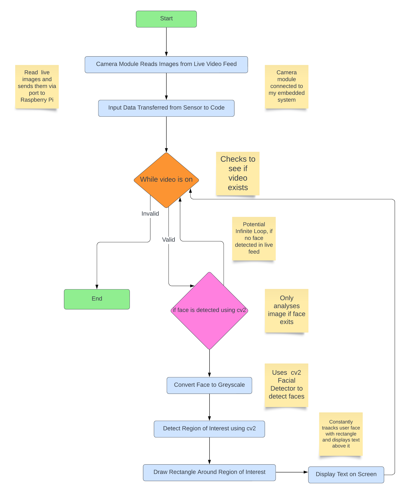
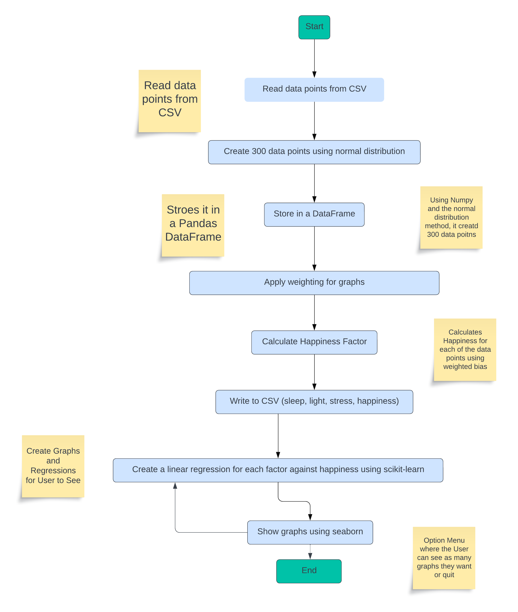
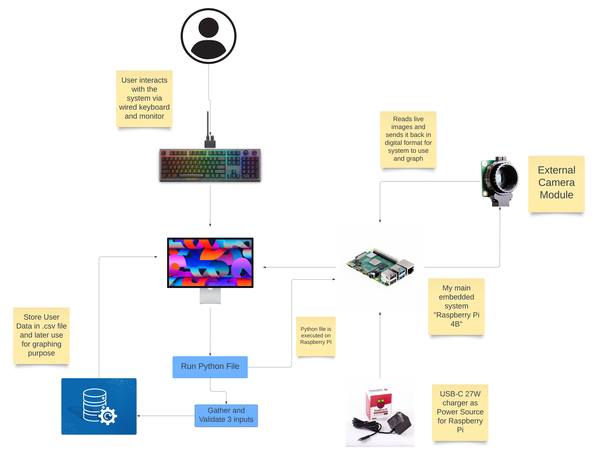
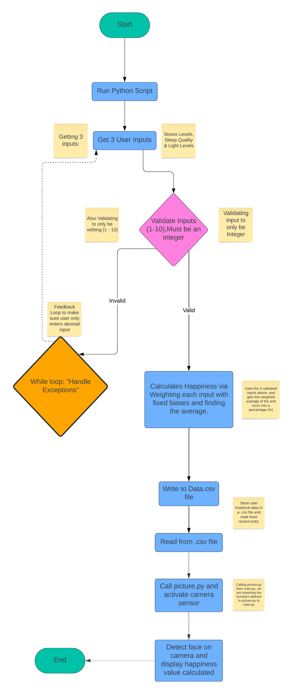
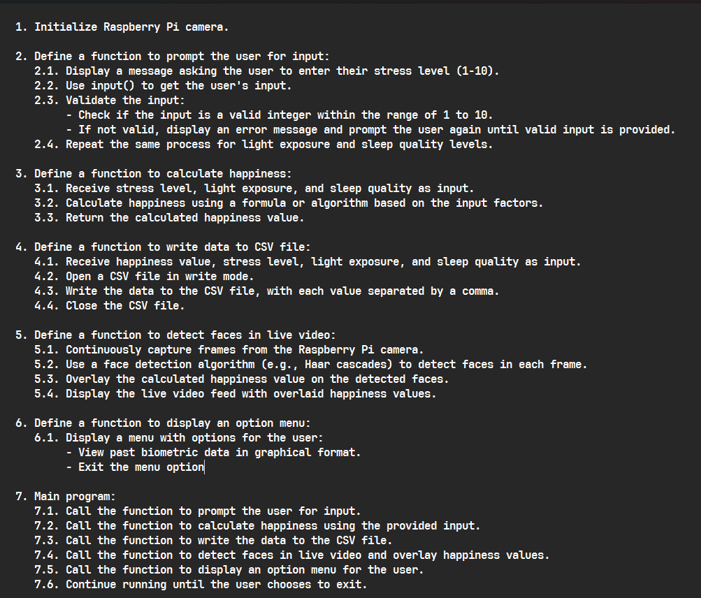
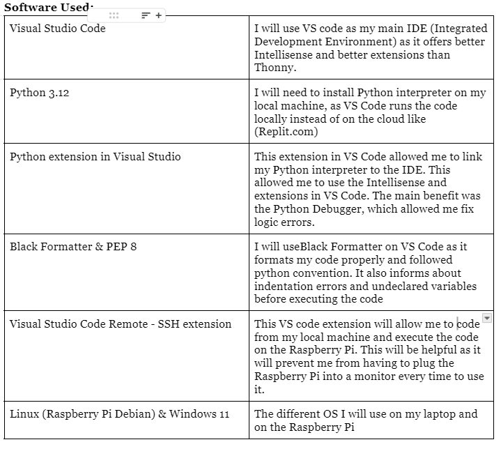
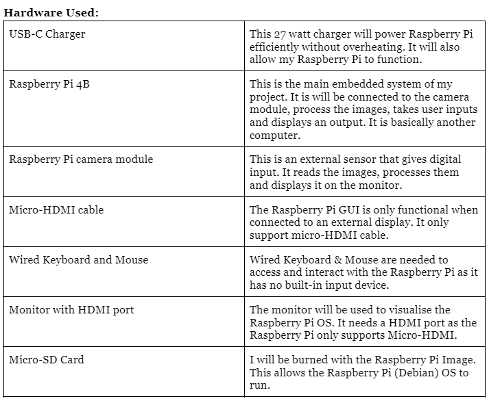

Description of my Project
- My project is an embedded system that will be designed to track happiness of 3 factors (Stress, Light Level & Sleep).
- From these 3 inputs, my project will then take an image of the user using the Rpi camera module and will analyse the user’s face, with the given inputs and give you a percentage (happiness).
- It will later give you an option menu to see you biometric data in a grapical format.
- The user can see 3 different regression models, which mathematically and graphically will show the relationship between the individual factors and happiness. (Positive/Negative Correlation).
- It also shows a 3d graph, with each factor being a plane and intersecting each other. This shows us all the trends when these factors intersect.
Personal Objectives from this Project:
- I hope to be better at coding embedded systems like Raspberry Pi, since this is my first time using one.
- I hope to have improved my knowledge and skill on external libraries (cv2, numpy, matplotlib & pandas).
- By the end of this project, I want to be able to explain exactly how the cv2 module detects faces using the camera module.
- I should also be better at graphing and regressions, since I have not done them since 5th year.
How my projects will meet the user needs mentioned in Investigation:
- I will meet my user’s needs of keeping the data private and safe, as the .csv file is secure and the data is stored locally.
- I also have considered the user’s price concern’s into mind as this whole system costs $40, if you already have a display.
- The user’s concerns about it being customizable is also accounted for, but it has a caveat. You need to be able to understand and write code to do so. This does not appeal to a vast majority of my end users and does not follow good Design Principles as it does not offer Abstraction to the End Users.
- User requirements such as battery operated and highly portable features will not be supported by this product design, as it constantly needs to be plugged into the power source.
How my projects will meet the basic requirements:
- My project meets BR1, as it is a fully automated embedded system that utilises digital/analogue input & outputs based on the theme of well-being. The Raspberry Pi acts my embedded system and it is fully automated as there is no need for the user to mess around with the code for the application to work.
- It also utilises analogue inputs (Rpi camera module) which reads and process live images and digital inputs (User inputs entered via a wired keyboard to the Rpi) as it is a part of the system. My project meets BR2, because it uses digital output when the Rpi writes the user inputs into a .csv file and It validates the 3 inputs from the user (Stress, Sleep and Light Levels) and makes sure that they are in the given range [1, 10] and of the right data type (int). It finally writes this data to .csv file. (Meets BR2)
- My project also meets BR3 because it uses the user inputs to create a bias on the happiness detection. This way it analyses the user data and makes an informed calculation about the user happiness. My project also gives the user an option menu to see multiple different graphs on the their previous history on each individual factor. (Meets BR3)
How my projects will meet the advanced requirements:
- My project meets AR1, because I have utilised a dataset which contains multiple descriptive features of wellbeing and also is capable of answering 2 what-if questions. I programmatically simulated (interpolated) using the Normal distribution method since I had limited data set of 30 users.
- I have fulfilled AR2 by making up 2 what-if questions (What factor affects the happiness the most and what is the correlation between it) & (What external activity is the most efficient at increasing happiness when done over a fixed period of time)
- The user’s concerns about it being customizable is also accounted for, but it has a caveat. You need to be able to understand and write code to do so. This does not appeal to a vast majority of my end users and does not follow good Design Principles as it does not offer Abstraction to the End Users.
- I also fulfilled AR3, because the users can choose to see the data in different graphical formats. (Regression Models, 2D graphs & 3D graphs) and get more detailed information about their biometrics.
Diagram Gallery

Flowchart of how the sensor captures and image and detects the face

Flowchar of how I simulated my DataSet using Normal Distribution in Numpy

Architecture Diagram shows all hardware used and what process they carry out.

Flowchart of how the user input is handled in my project (main.py)

Detailed Pseudocode of my project

What Software I am going to use for this project

What Hardware I will need to use for this project